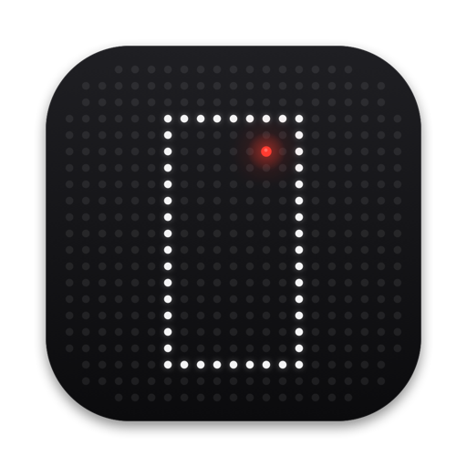

A teleprompter that follows your voice.
Spoken words dim as you go. It waits while you improvise and finds you again, even a few sentences further on.

A free Mac recorder with a teleprompter that follows your voice.
Spoken words dim as you go. It waits while you improvise and finds you again, even a few sentences further on.
take startCount in, recordtake againDiscard, record againtake endStop, keeptake resetTeleprompter from the topFour spoken commands, also one click away. In your script they are lines, not orders. A spoken take end is trimmed off the take, unless you would rather end on it. A discarded take is moved, never deleted.
The largest 9:16, 4:5, 1:1 or 16:9 crop of what the camera sends, written straight to HEVC.
They mark −18 to −6 dB. Red means too loud.
This page has no analytics either.
Signed and notarized by Apple. It opens like any other app.
take listens in English or German. If it says Voice is off, add the language under Keyboard › Dictation in System Settings.